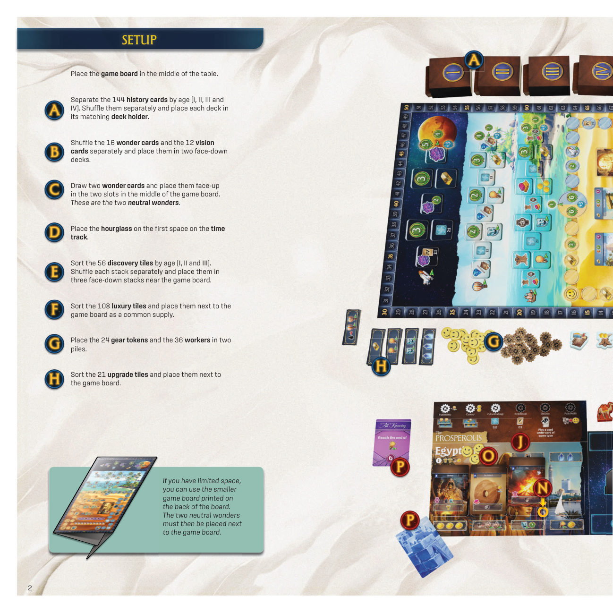
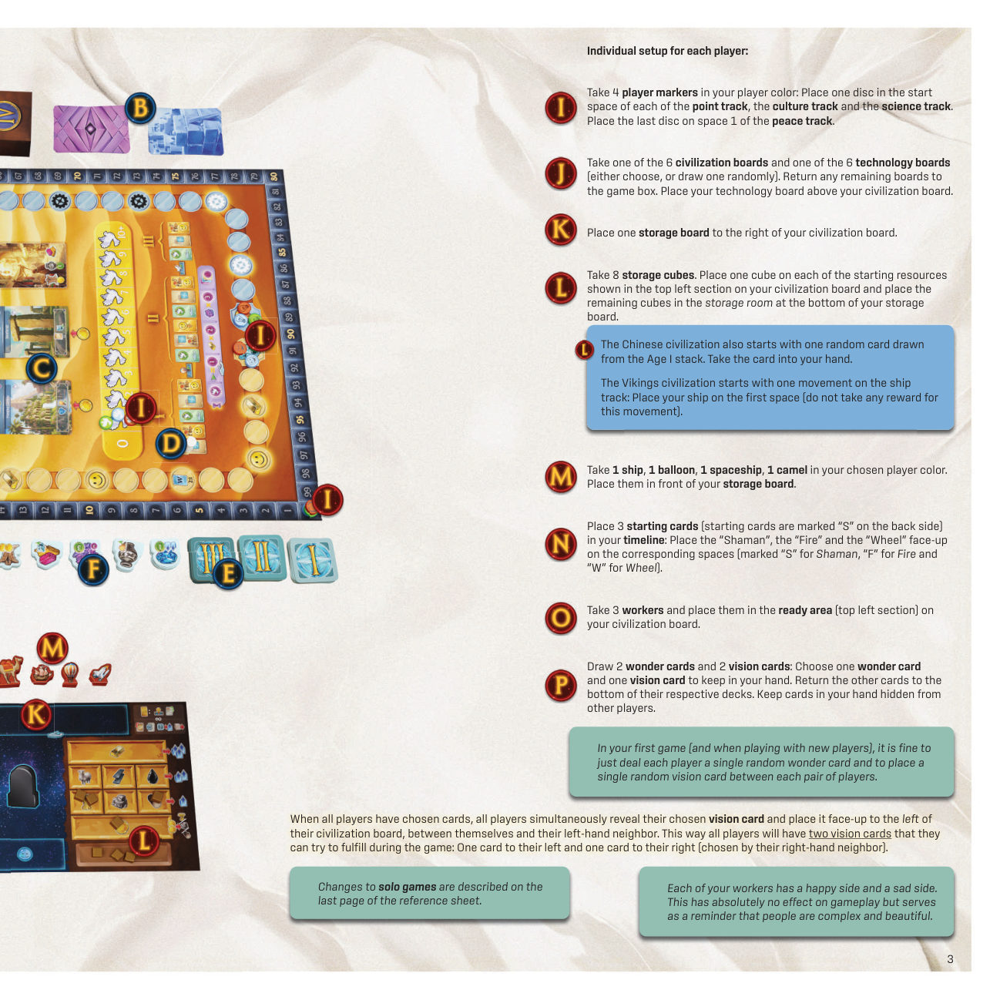
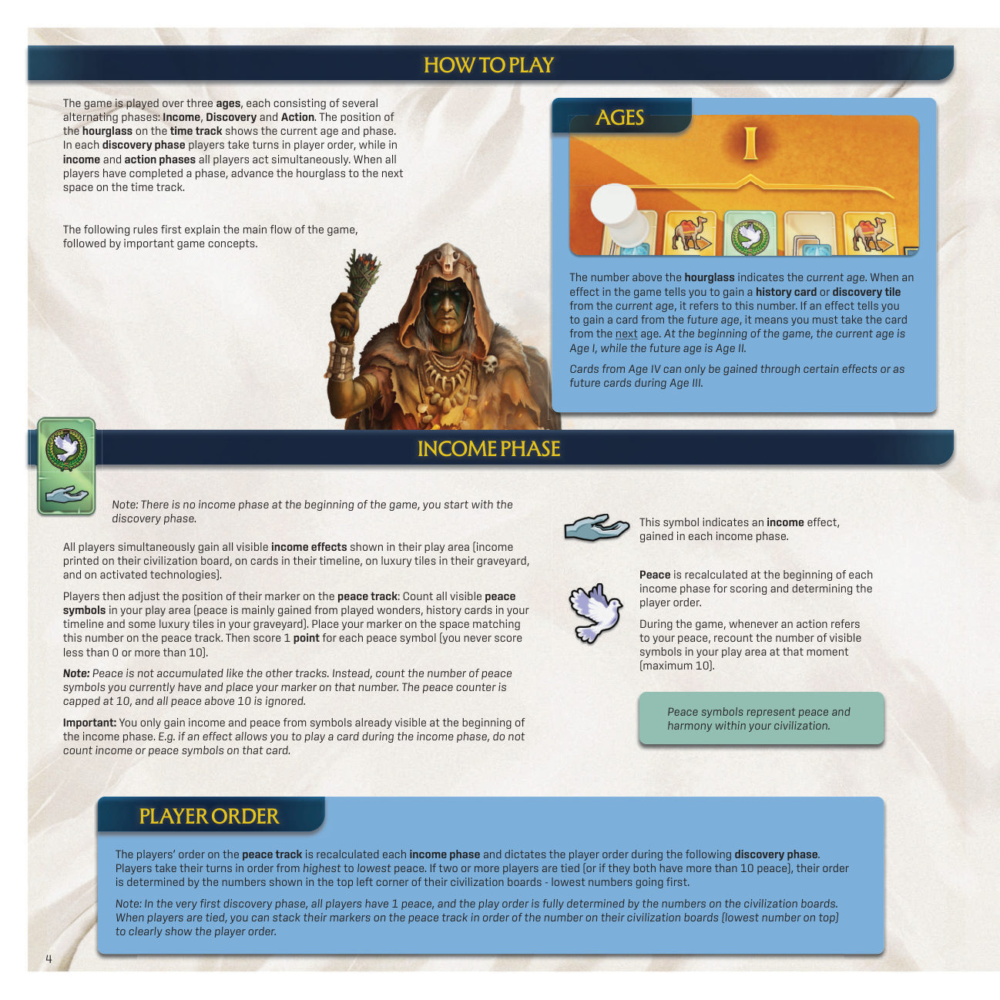
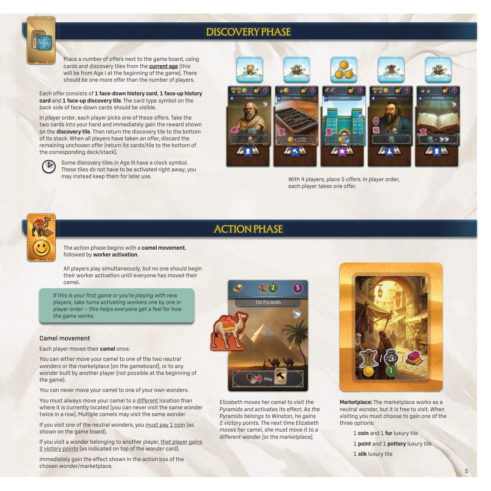
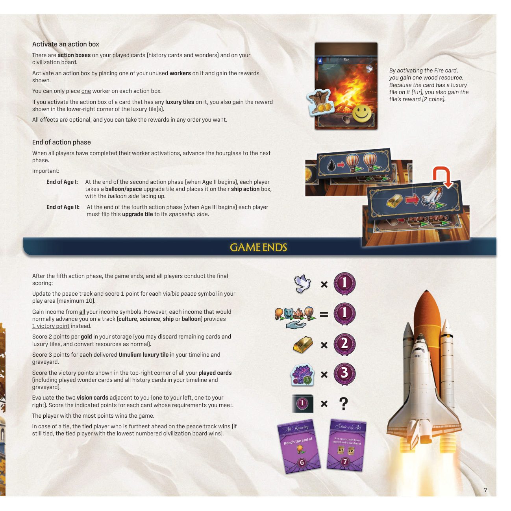
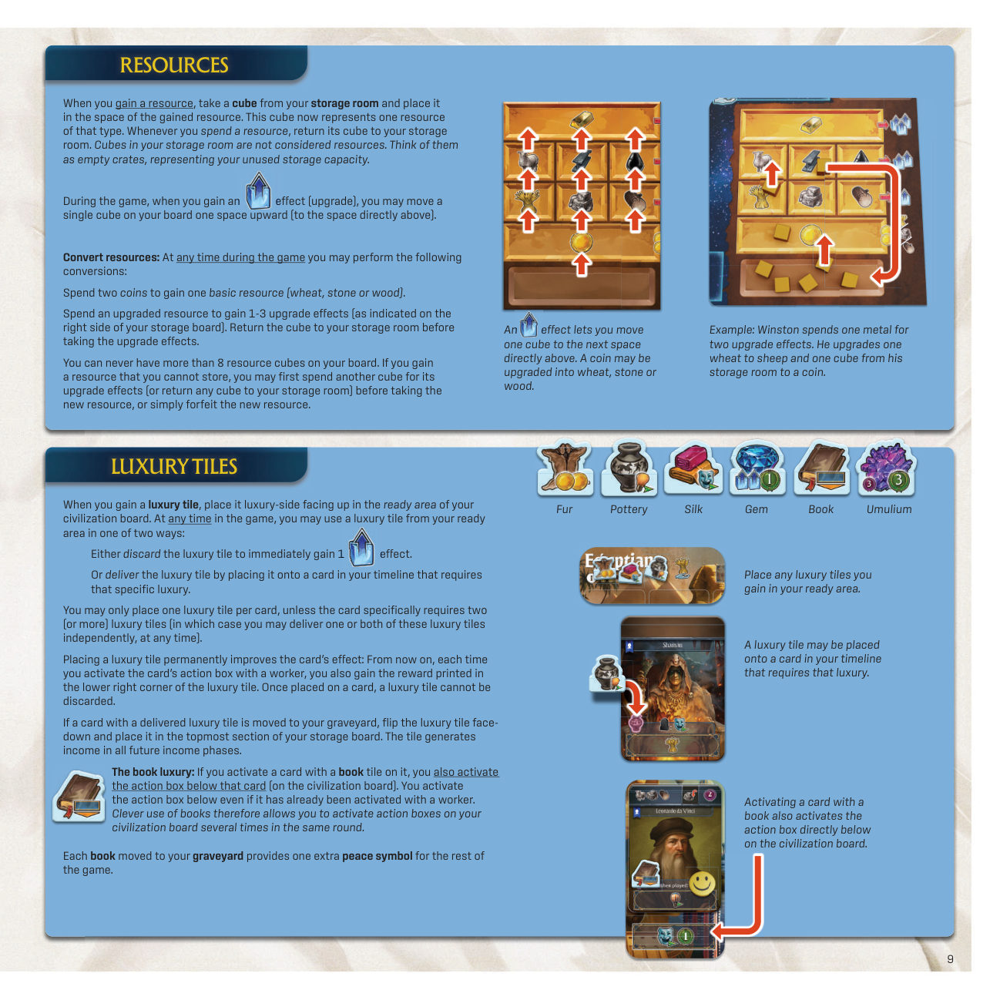
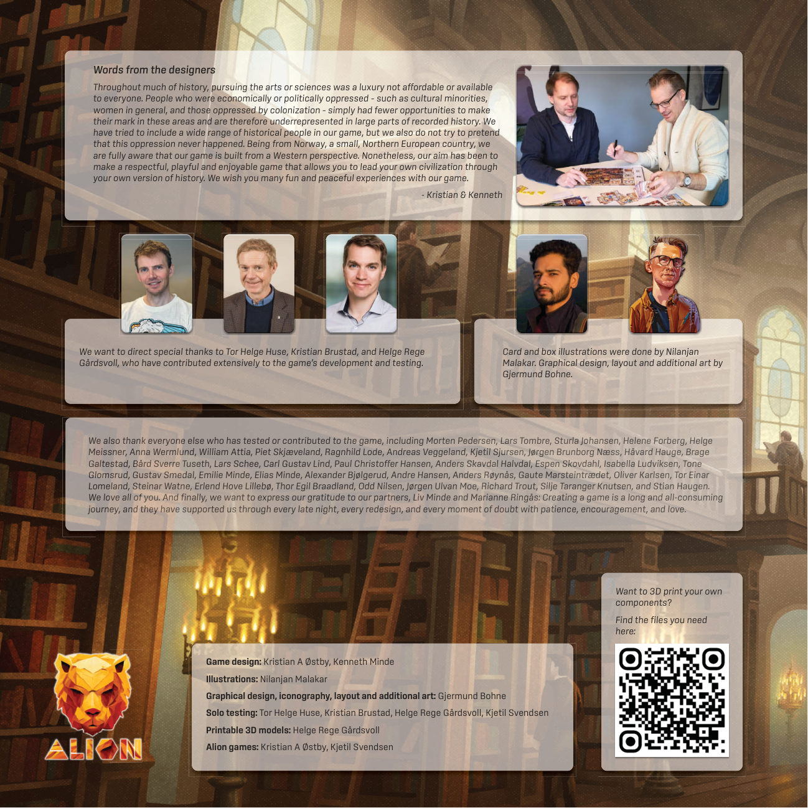

时代跨度 · 学习版规则
0游戏概要与目标
率领文明自石器时代推进至太空时代，把历史卡打入时间线、交付奢侈品板块、建造奇观、沿轨道前进，由此累积胜利分。第三个时代结束、第五个行动阶段结算完毕后，胜利分最高者获胜。p.1p.7
| 项目 | 取值 | 依据 |
|---|---|---|
| 人数与时长 | 原书正文未列人数与时长；文明板与科技板各 6 块，探索阶段按人数加一摆放组合包 | p.3p.5 |
| 轮转 | 收入与行动阶段全员同时；探索阶段按和平轨由高至低依次 | p.4 |
| 游戏长度 | 三个时代、五个行动阶段；第五个行动阶段后终局 | p.4p.7 |
| 终局触发 | 第五个行动阶段结算完毕，非分数门槛、非牌堆耗尽 | p.7 |
0.1 时代与行动阶段的对应
原书以行动阶段的序号标记时代交替：第二个行动阶段结束进入时代 II，第四个行动阶段结束进入时代 III，第五个行动阶段结束即终局。p.7
| 时代 | 行动阶段 | 该时代结束时的处理 |
|---|---|---|
| 时代 I | 第 1、第 2 个 | 第 2 个行动阶段末，各人取热气球／飞船升级板块置于船只行动框，热气球面朝上 |
| 时代 II | 第 3、第 4 个 | 第 4 个行动阶段末，把该升级板块翻至飞船面 |
| 时代 III | 第 5 个 | 该阶段后进入终局计分 |
1初局设置
设置分公共布置与个人布置两组，数量全部取自原书设置一节的叙述。原书封面、设计师的话与制作名单不列入规则。p.1p.2p.3p.12
1.1 公共布置
- 把游戏版图置于桌面中央。p.2
- 按时代 I、II、III、IV 分出 144 张历史卡，分别洗匀，每叠放入对应牌架。p.2
- 分别洗匀 16 张奇观卡与 12 张愿景卡，成两叠背面朝下放置。p.2
- 抽 2 张奇观卡正面朝上放入版图中央的两个槽位，此为两张中立奇观。p.2
- 把沙漏置于时间轨第一格。p.2
- 按时代 I、II、III 分拣 56 块探索板块，分别洗匀成三叠背面朝下置于版图旁。p.2
- 把 108 块奢侈品板块分类整理，作为公共供应置于版图旁；把 24 个齿轮标记与 36 个工人分成两堆。p.2
- 把 21 块升级板块分类整理，置于版图旁。p.2
1.2 个人布置
- 取本色 4 个玩家标记：分数轨、文化轨、科技轨各起始格放 1 个，和平轨第 1 格放 1 个。p.3
- 取 6 块文明板中的 1 块与 6 块科技板中的 1 块，自行选定或随机抽取，余板回盒；科技板置于文明板上方。p.3
- 把 1 块储物板置于文明板右侧。p.3
- 取 8 个资源方块，按文明板左上角所示起始资源各放 1 个，余者放入储物板底部仓库。p.3
- 取本色船、热气球、飞船、骆驼各 1 个，置于储物板前。p.3
- 把 3 张起始卡放入时间线：萨满、火、轮子分别正面朝上置于标 S、F、W 的格子，起始卡背面标有 S。p.3
- 取 3 个工人置于文明板待命区。p.3
- 抽 2 张奇观卡与 2 张愿景卡，各留 1 张入手牌，其余放回各自牌堆底部；手牌对其他玩家保密。p.3
1.3 愿景卡的摆位
全体选定后同时翻出各自保留的愿景卡，正面朝上置于本人文明板左侧、与左手边玩家之间。由此每人面对两张愿景卡：左侧一张由本人选定，右侧一张由右手边玩家选定，终局时两张分别评估。p.3p.7
1.4 起始差异与简化设置
| 条目 | 处理 | 依据 |
|---|---|---|
| 中国文明 | 自时代 I 卡堆随机抽 1 张卡加入手牌 | p.3 |
| 维京文明 | 船只轨起始有 1 次移动，把船放在第一格，不领取该次移动的奖励 | p.3 |
| 首次游戏设置 | 每位玩家随机发 1 张奇观卡，每两位玩家之间放 1 张随机愿景卡，替代抽二留一 | p.3 |
| 首次游戏行动阶段 | 工人激活改为按玩家顺序逐个轮流，不作同时执行 | p.5 |
| 单人游戏 | 原书注明改动写在参考表最后一页，本册正文未收录，不代填 | p.3 |
2版图与组件速认
按使用先后认识版图与配件：先分公共区与个人区，再分轨道、行动框与卡面符号。配件数量取自设置一节，不作推算。p.2p.3
2.1 公共区
| 位置 | 内容 | 作用 |
|---|---|---|
| 版图中央两槽 | 两张中立奇观 | 骆驼可访问，访问须支付 1 金币并激活其行动框 |
| 版图集市位 | 集市 | 访问免费，自三项收益中选定一项 |
| 时间轨 | 沙漏与其上方数字 | 数字标示当前时代，沙漏位置标示当前阶段 |
| 环绕版图的分数轨 | 分数标记与 0–50 格 | 累积胜利分 |
| 和平轨 | 和平标记 | 每个收入阶段重算，定分并决定下一探索阶段顺序 |
| 文化轨、科技轨 | 两条推进轨 | 经过与停留的格子奖励全部结算，共用蓝色奖励分 |
| 船只／热气球／飞船轨 | 同一条分段推进轨 | 首次移动把载具放第一格，其后沿轨右移 |
| 牌架与供应堆 | 四个时代历史卡叠、奇观卡叠、愿景卡叠、三叠探索板块、108 块奢侈品、24 个齿轮、36 个工人、21 块升级板块 | 按效果指定的时代与类型取用 |
2.2 个人区四件板
- 文明板：左上为待命区与起始资源格，中部为四格时间线，板面印有数个行动框；行动框供工人放置，每个框至多 1 个工人。p.3p.6
- 科技板：置于文明板上方，印白色与黑色齿轮槽；放入匹配颜色的齿轮标记即解锁其下方科技。p.3p.10
- 储物板：置于文明板右侧，分底部仓库、上部收入区与休息区三处；仓库中的方块不算资源，上部收入区的奢侈品板块在后续收入阶段产生收入，休息区的工人留至下一个行动阶段。p.3p.6p.9
- 载具与骆驼：船、热气球、飞船用于轨道推进，骆驼用于访问奇观与集市。p.3p.5p.10
2.3 卡与板块
| 类别 | 数量 | 印面与用法 |
|---|---|---|
| 历史卡 | 144 张，分时代 I–IV | 左上角费用、卡类型、奢侈品需求、行动框、弃掉效果、右上角胜利分、和平符号、收入符号 |
| 奇观卡 | 16 张 | 费用、行动框、他人访问时给予所有者的胜利分、终局胜利分、和平符号 |
| 愿景卡 | 12 张 | 终局评估左右相邻两张，满足条件者按卡面给分 |
| 探索板块 | 56 块，分时代 I–III | 组合包中正面朝上，取用时立即结算所示奖励；时代 III 部分板块带时钟符号 |
| 奢侈品板块 | 108 块，共六种 | 毛皮、陶器、丝绸、宝石、书籍、乌穆利姆；右下角印强化奖励 |
| 升级板块 | 21 块 | 置于文明板对应行动框以强化该行动；热气球／飞船板块时代交替时翻转 |
| 齿轮标记 | 24 个 | 按白色或黑色齿轮槽解锁科技 |
| 资源方块 | 每人 8 个 | 在文明板资源格与仓库之间移动，表示资源的取得与花费 |
3核心引擎
时间轨把全局切成三个阶段序列：收入、探索、行动。全体完成一个阶段后沙漏前进一格，进入下一格所印阶段。开局无收入阶段，自探索阶段起。三个时代内共出现五个行动阶段，第五个行动阶段之后终局。p.4p.7
3.1 时代与取牌口径
沙漏上方的数字为当前时代。效果要求自当前时代取得历史卡或探索板块时，按该数字取用；要求自未来时代取得卡牌时，自下一个时代取用。开局当前时代为时代 I、未来时代为时代 II；时代 IV 的卡只能由特定效果取得，或在时代 III 期间作为未来卡取得。p.4
3.2 阶段的同时性与顺序
| 阶段 | 执行方式 | 完成标志 |
|---|---|---|
| 收入阶段 | 全员同时取得收入效果并重算和平 | 全员结算完毕，沙漏前进 |
| 探索阶段 | 按和平轨由高至低依次取组合包 | 全员各取一个，剩余组合包弃置，沙漏前进 |
| 行动阶段 | 骆驼移动全员同时；工人激活全员同时 | 全员完成工人激活，沙漏前进 |
4三个阶段与时代交替
4.1 收入阶段
该阶段把个人区已印出的符号转为资源与分数，并按和平符号数量重定下一探索阶段的顺序。p.4
- 结算收入：全员同时取得游玩区内所有可见的收入效果，来源为文明板印值、时间线上的卡牌、墓地中的奢侈品板块与已激活的科技。p.4
- 重算和平：数出游玩区当前全部可见和平符号，把和平标记置于与其数量相符的格子，每个符号得 1 分，计分下限 0、上限 10。和平不逐阶段累积，超过 10 的符号忽略。p.4
- 只数起始可见符号：阶段开始时已可见的符号才计入；若某效果在收入阶段内打出卡牌，该卡上的收入与和平符号均不计入本次结算。p.4
- 定序：下一探索阶段按和平由高至低依次行动；并列或同超过 10 时，按文明板左上角编号由小到大。首个探索阶段全员均为 1 和平，顺序全由文明板编号决定。p.4
4.2 探索阶段
该阶段向手牌补充卡牌，并即时结算所选组合包中的探索板块奖励。p.5
- 按当前时代的卡牌与探索板块摆放组合包，数量比玩家人数多 1；开局取用时代 I。p.5
- 每个组合包含 1 张背面朝下的历史卡、1 张正面朝上的历史卡与 1 张正面朝上的探索板块；背面朝下卡牌的卡类型符号保持可见。p.5
- 按玩家顺序各取一个组合包：两张卡加入手牌，立即取得探索板块所示奖励，随后把该板块放回其所属叠的底部。p.5
- 全员取完后，把未被取走的那个组合包的卡牌与板块分别放回对应牌堆与叠的底部。p.5
- 时代 III 部分探索板块带时钟符号，其奖励不必即时激活，可留至其后使用。p.5
4.3 行动阶段之一：骆驼移动
骆驼移动把玩家自己的一次行动接到中立奇观、集市或他人奇观的动作框上，不占用工人。全员移动完毕后才进入工人激活。p.5p.6
- 移动一次：每位玩家把骆驼移至两张中立奇观之一、集市或另一位玩家已建造的奇观；开局尚无他人已建造的奇观，故该选项当时不可用。p.5
- 位置约束：不得移至自己的奇观；必须与骆驼当前所在位置不同，同一处奇观不得连续访问两次；多只骆驼可同时位于同一处。p.5
- 访问中立奇观：支付 1 金币，随后取得该奇观行动框所示效果。p.5
- 访问他人奇观：该奇观的所有者取得 2 胜利分，访问者随后取得其行动框所示效果。p.5
- 访问集市：免费，按版图所示在 1 金币与 1 块毛皮、1 分与 1 块陶器、1 块丝绸之间选定一项取得。p.5
4.4 行动阶段之二：工人激活
工人激活把手牌中的卡牌与版图上的行动框转为资源、轨道推进与卡牌收益，两项主动作在同一阶段内可任意交错、重复执行。p.6
- 收回工人：把全部工人自卡牌、行动框与休息区取回，置于文明板待命区。p.6
- 打出卡牌：支付卡牌左上角所示资源，自手牌打出一张卡。p.6
- 激活行动框：自待命区取 1 个可用工人，置于文明板、时间线卡牌或本人已建造奇观的行动框上，取得该框所示奖励；每个行动框至多 1 个工人。p.6
- 辅助动作随时执行：弃掉卡牌、交付奢侈品板块、弃掉奢侈品板块、转化资源，四项在任意阶段的任意时点均开放。p.6
4.5 阶段结束与时代交替
全员完成工人激活后沙漏前进一格。时代交替由两个固定的行动阶段序号触发，与卡牌、资源或分数状态无关。p.7
| 时点 | 处理 | 依据 |
|---|---|---|
| 第 2 个行动阶段末，时代 II 起 | 各人取 1 块热气球／飞船升级板块置于自己的船只行动框，热气球面朝上 | p.7 |
| 第 4 个行动阶段末，时代 III 起 | 把该升级板块翻至飞船面 | p.7 |
| 第 5 个行动阶段末 | 进入终局计分，不再推进沙漏 | p.7 |
5行动逐条深挖
工人激活阶段只有两项主动作：打出卡牌与激活行动框。二者的规则作用不同，前者改变时间线与个人区的卡位，后者把工人占用转为即时收益；四项辅助动作不改变阶段结构。p.6
5.0 · 行动结构与行动位差异
| 行动位 | 触发载体 | 占用 | 附带收益 | 限制 |
|---|---|---|---|---|
| 文明板行动框 | 工人 | 每框 1 个工人 | 框上印值；书籍板块可令其下方行动框再激活一次 | 工人取自待命区 |
| 时间线卡牌行动框 | 工人 | 每框 1 个工人 | 框上印值；卡上已交付奢侈品时另取其右下角奖励 | 墓地中的卡不可激活 |
| 本人已建造奇观行动框 | 工人 | 每框 1 个工人 | 框上印值 | 奇观卡留在储物板上方至终局 |
| 中立奇观行动框 | 骆驼 | 不占工人 | 框上印值 | 支付 1 金币，且不得连续访问同一处 |
| 他人已建造奇观行动框 | 骆驼 | 不占工人 | 访问者取框上印值，所有者另得 2 胜利分 | 不得移至自己的奇观 |
| 集市 | 骆驼 | 不占工人 | 三项收益中选定一项 | 免费，同样受位置变更约束 |
5.1 打出卡牌
- 支付费用：按卡牌左上角所示资源支付；费用只在打出时结算。p.6p.8
- 历史卡：置于时间线最左格，时间线上其余各卡右移一格，最右格的卡被推入墓地。p.6
- 奇观卡：正面朝上置于储物板上方，留至终局；本人可用工人激活其行动框，其他玩家可用骆驼访问。p.6
- 时机效果：历史卡入时间线时结算打出时效果；奇观卡不进入时间线，故不引发右移与挤出。p.8
5.2 激活行动框
- 自待命区取 1 个工人置于所选行动框，取得框上印值；每框至多 1 个工人。p.6p.7
- 所激活的卡上若放有奢侈品板块，同时取得该板块右下角所示奖励。p.7
- 框上各项效果均为可选，领取顺序由本人决定。p.7
- 原书示例：激活「火」取得 1 木材；该卡放有毛皮板块，故另取得板块印值的 2 金币。p.7
5.3 四项辅助动作
| 动作 | 规则作用 | 依据 |
|---|---|---|
| 弃掉卡牌 | 取得卡面弃掉效果，卡牌放回对应牌堆底部 | p.8 |
| 交付奢侈品板块 | 把待命区板块置于时间线上需求该奢侈品的卡，永久追加其右下角奖励 | p.9 |
| 弃掉奢侈品板块 | 立即取得 1 个升级效果 | p.9 |
| 转化资源 | 按第 7 节两条固定比值转换资源或换取升级效果 | p.9 |
5.4 文明板上的行动
文明板行动框分通用与独特两组，均须以工人激活，执行时按框上印值结算。p.11
| 通用行动 | 结算 |
|---|---|
| 金币 | 取得 2 金币 |
| 资源升级 | 升级 2 个资源 |
| 科技轨推进 | 科技轨前进一次，并取得 1 金币 |
| 文化轨推进 | 文化轨前进一次，分数轨前进一次 |
| 船只轨推进 | 支付 1 木材，船前进两次 |
| 按类型抽卡 | 在人物、建筑、发明三种卡类型中选定一种，自当前时代牌堆抽牌直至抽到该类型，其余卡放回牌堆底部 |
| 文明 | 独特行动 |
|---|---|
| 埃及 | 取得 3 金币 |
| 希腊 | 支付 1 金币，科技轨前进两次 |
| 维京 | 船只轨移动两次，不支付木材 |
| 巴比伦 | 按通用行动的方式抽一张卡，或改为移动骆驼一次，两者选定其一 |
| 墨西加 | 自未来牌堆抽 2 张卡，留 1 张、弃 1 张 |
6贯穿全局的系统
跨阶段生效的四组结构分列于后：时间线与墓地、卡面时机与叠压、轨道推进、科技解锁。四组结构均不改变阶段序列，只在各自触发时改动个人区状态。p.4p.6p.8p.10
6.1 时间线与墓地
文明板上的四个卡位构成时间线。每次打出历史卡都自最左格插入，原有卡依次右移一格；最右格的卡被推出时间线后翻面朝下置于储物板的墓地。p.6
| 对象 | 进入墓地后的状态 | 依据 |
|---|---|---|
| 历史卡 | 不提供收入、不可激活，终局仍按卡面右上角胜利分计入 | p.6p.7 |
| 卡上已交付的奢侈品板块 | 翻面朝下置于储物板上部，其后每个收入阶段产生收入 | p.6p.9 |
| 卡上的工人 | 置于储物板休息区，留至下一个行动阶段才随其他工人一并收回 | p.6 |
| 叠压在卡下的卡牌 | 随上层卡一并移动或进入墓地，终局正常计分 | p.8 |
6.2 历史卡卡面与四种时机
| 印面 | 含义 |
|---|---|
| 左上角费用 | 工人激活期间打出该卡时支付的资源 |
| 卡类型 | 建筑、人物、发明、特殊、次世代；特殊与次世代带紫色横幅 |
| 奢侈品需求 | 可置于该卡的奢侈品板块种类，随时可交付 |
| 行动框 | 工人放置位，激活时取得框上印值 |
| 弃掉效果 | 弃掉该卡时取得的奖励，卡放回对应牌堆底部 |
| 右上角胜利分 | 终局计分 |
| 和平符号、收入符号 | 收入阶段分别用于和平重算与收入结算 |
| 时机效果 | 触发条件 | 不触发的情形 |
|---|---|---|
| 打出时 | 该卡被打入时间线，结算一次 | 卡牌被弃掉或被直接送入墓地 |
| 完成时 | 所需奢侈品板块全部放上该卡，结算一次 | 仅放上部分所需板块 |
| 移动时 | 该卡每次在时间线内移到新位置，含被推入墓地那次 | 卡牌建造时；由其他效果直接送入墓地 |
| 死亡效果 | 该卡以任何方式移入墓地，结算一次 | 卡牌仍留在时间线或手牌 |
6.3 叠压卡
- 部分效果允许把一张卡压入时间线上另一张卡之下，仅露出下层卡的行动框；两卡的行动框合并为一个大行动框。p.8
- 在上层卡放置 1 个工人即同时激活两个行动框；下层卡不得单独放置工人。p.8
- 下层卡被遮住的奢侈品需求、和平、收入、卡类型、死亡效果与打出时效果全部忽略。p.8
- 两卡须属同一类型，范围为建筑、人物或发明；特殊与次世代带紫色横幅，永不可叠压；一张卡之下至多压 1 张。p.8
- 叠压卡随上层卡一起移动位置或进入墓地，终局按卡面正常计分。p.8
6.4 奇观卡
开局手中有 1 张奇观卡，文化轨推进可取得更多。打出时支付卡面费用并把卡置于储物板上方，留至终局；本人可用工人激活其行动框，其他玩家可用骆驼访问。卡面另印两项胜利分：他人访问时给予所有者的分值、终局计分的分值；和平符号只对所有者有效，对访问者无效。p.8
6.5 轨道推进与蓝色奖励分
- 沿文化轨、科技轨、船只／热气球／飞船轨推进时，停留格与途经格的奖励全部结算。p.10
- 载具轨的首次移动把对应载具放在第一格，其后每次移动向右推进；部分格子要求自两三项奖励中选定一项。p.10
- 船只轨首次移动时自三种奢侈品板块中选定一种；下一次移动在毛皮板块与科技轨推进一次之间选定其一。p.10
- 棋子到达某轨终点后不再前进，其后在该轨的每次移动改为取得终点旁所印胜利分。p.10
- 首位到达某轨终点的玩家，除末格的奢侈品板块与绿色分之外另取蓝色奖励分；同一阶段内、沙漏推进之前抵达同一终点的其他玩家同样取得该蓝色分。沙漏一旦推进，该轨蓝色分不再可得。p.10
- 文化轨与科技轨共用蓝色奖励分：任一条终点被抵达的那一阶段结束，两条轨的蓝色分同时失效。p.10
6.6 科技板与升级板块
- 科技轨推进至印有齿轮的格子时，自供应堆取 1 个齿轮标记，放入科技板上空的同色齿轮槽，白槽配白标记、黑槽配黑标记，由此解锁其下方科技。p.10
- 多数科技为一次性效果；部分科技在解锁时另给齿轮槽右侧所印的奖励资源，部分科技自此在每个收入阶段提供收入。p.10
- 部分科技提供升级板块，把所示板块置于文明板对应行动框以强化该行动；该框原放有工人时，把工人移入休息区。p.10
- 祭祀葬仪提供永久持续效果，乌托邦主义解锁一个永久和平符号。p.10
- 升级板块覆盖的格子在埃及与希腊文明板上印面略有差异，以实体板面为准。p.10
7资源与费用
资源以文明板上的方块表示，仓库中的空方块不计为资源；升级效果把方块沿资源格向上移动，转化与上限规则决定方块能否继续存放。p.9
7.1 资源的取得与花费
- 取得资源时自仓库取 1 个方块置于该资源格；该方块自此代表 1 个该类型资源。p.9
- 花费资源时把对应方块放回仓库；仓库中的方块视作空箱，代表未使用的储存容量。p.9
- 取得 1 个升级效果时，把板上 1 个方块向上移动一格至正上方资源格；金币可升级为小麦、石头或木材。p.9
7.2 两条转化与容量上限
| 项目 | 规则 | 依据 |
|---|---|---|
| 金币换基础资源 | 花费 2 金币，取得 1 个小麦、石头或木材 | p.9 |
| 已升级资源换升级效果 | 花费 1 个已升级资源，按储物板右侧所示取得 1–3 个升级效果；先把该方块放回仓库，再结算升级效果 | p.9 |
| 容量上限 | 板上至多 8 个资源方块 | p.9 |
| 超出上限时 | 在取得新资源前，先花费另一方块换取其升级效果，或把任意方块放回仓库；亦可放弃该新资源 | p.9 |
7.3 六种奢侈品板块
取得的奢侈品板块先奢侈品面朝上置于文明板待命区，其后在两项用途中选定一项：弃掉该板块立即取得 1 个升级效果，或交付到时间线上需求该奢侈品的卡上。p.9
| 奢侈品 | 用途与终局 |
|---|---|
| 毛皮、陶器、丝绸、宝石、书籍、乌穆利姆 | 交付后永久追加板块右下角奖励；已交付的乌穆利姆在时间线与墓地中每块终局计 3 分 |
- 每张卡至多放 1 块奢侈品板块；卡面明确需求两块或更多时，可分别交付其中一块或多块，交付时点各自独立。p.9
- 板块放上卡牌后不可再弃掉；其后每次以工人激活该卡行动框，同时取得板块右下角印值。p.9
- 带有已交付板块的卡进入墓地时，把板块翻面朝下置于储物板上部，其后每个收入阶段产生收入。p.9
- 激活放有书籍板块的卡时，同时激活该卡正下方文明板上的行动框，即使该框已由工人激活过；由此同一阶段内可多次激活文明板行动框。p.9
- 每本进入墓地的书籍在此后全局额外提供 1 个和平符号。p.9
8终局与计分链路
第五个行动阶段之后不再推进沙漏，全体按固定顺序结算六项终局计分。原书游戏目标页以「第三个时代结束」表述，与「第五个行动阶段之后」指同一时点。p.1p.7
8.1 六项计分顺序
| 序 | 项目 | 结算口径 | 依据 |
|---|---|---|---|
| 1 | 和平 | 更新和平轨，游玩区每个可见和平符号得 1 分，上限 10 | p.7 |
| 2 | 收入 | 取得全部收入符号的效果；原本会使文化、科技、船只、热气球轨前进的收入，每项改为 1 胜利分 | p.7 |
| 3 | 金币 | 储物中每 1 金币得 2 分；此时仍可弃掉剩余卡牌与奢侈品板块、转化资源 | p.7 |
| 4 | 乌穆利姆 | 时间线与墓地中每块已交付的乌穆利姆得 3 分 | p.7 |
| 5 | 卡牌 | 已打出的奇观卡、时间线与墓地中的全部历史卡，按各自右上角胜利分合计 | p.7 |
| 6 | 愿景卡 | 评估左右相邻两张愿景卡，每满足一张取其印值 | p.7 |
8.2 算例
示例数值仅用于演算，非原书给定局面。p.7
| 步 | 局面 | 计算 | 所得 |
|---|---|---|---|
| 1 | 可见和平符号 6 个 | 6 × 1 | 6 分 |
| 2 | 3 项收入，其中 2 项为轨道推进、1 项为金币 | 2 × 1，另取得 1 金币 | 2 分、1 金币 |
| 3 | 储物共 4 金币 | 4 × 2 | 8 分 |
| 4 | 时间线 1 块、墓地 1 块已交付乌穆利姆 | 2 × 3 | 6 分 |
| 5 | 已打出卡牌右上角合计 11 分 | 按卡面合计 | 11 分 |
| 6 | 左侧愿景卡满足 6 分、右侧未满足 | 6 + 0 | 6 分 |
| 合 | 六项合计 | 6 + 2 + 8 + 6 + 11 + 6 | 39 分 |
8.3 平局判定
胜利分并列时，取和平轨位置更靠前的并列玩家；仍并列则取文明板编号最小的并列玩家。p.7
9常见误读
以下各条按规则作用归类，均附原书页码。p.4–p.11
- 开局不设收入阶段，自探索阶段起。p.4
- 和平不逐阶段累积，每个收入阶段重新数符号并把标记放在对应格；上限 10，超出部分忽略。p.4
- 收入阶段只计阶段开始时已可见的收入与和平符号，阶段内打出的卡不计入本次结算。p.4
- 和平轨顺序只决定其后的探索阶段，收入与行动阶段仍为全员同时。p.4
- 首个探索阶段全员均为 1 和平，顺序全由文明板左上角编号决定。p.4
- 当前时代按沙漏上方数字判定；未来时代指下一个时代，时代 IV 的卡只能由特定效果或时代 III 的未来卡取得。p.4
- 组合包数量比玩家人数多 1，全员取完后剩下的那个弃置。p.5
- 组合包内背面朝下的历史卡，其卡背类型符号保持可见；两张卡均入手牌，探索板块奖励立即结算后板块回叠底。p.5
- 时代 III 带时钟符号的探索板块可留至以后使用，不必即时激活。p.5
- 骆驼不得移至自己的奇观，且必须与当前位置不同，同一处不得连续访问两次；多只骆驼可同处一地。p.5
- 访问中立奇观须支付 1 金币；访问集市免费。p.5
- 访问他人已建造奇观时，2 胜利分归奇观所有者，行动框效果归访问者。p.5
- 工人激活前须把全部工人自卡牌、行动框与休息区收回待命区。p.6
- 打出卡牌与激活行动框在同一阶段内可任意交错、重复执行，无先后顺序；每个行动框至多 1 个工人。p.6
- 弃牌、交付奢侈品、弃奢侈品、转化资源四项在任意阶段的任意时点均开放。p.6
- 奇观卡置于储物板上方留至终局，不进入时间线，故不引发右移与挤出。p.6
- 墓地中的卡不提供收入、不可激活，终局仍按右上角胜利分计分。p.6p.7
- 卡上已交付的奢侈品板块随卡入墓地后翻面置于储物板上部，其后每个收入阶段产生收入。p.6p.9
- 休息区的工人留至下一个行动阶段，不在同一阶段内回到待命区。p.6
- 打出时效果不因弃牌或直接送入墓地触发；死亡效果则不论以何种方式入墓地均触发一次。p.8
- 移动时效果在卡每次移到时间线新位置时触发，含被推入墓地那次；建造与直接送入墓地不触发。p.8
- 叠压卡须与上层卡同类，特殊与次世代不可叠压，一张卡之下至多压一张；下层被遮符号全部忽略。p.8
- 书籍板块使该卡正下方的文明板行动框同时激活，即使该框已由工人激活过；每本入墓地的书籍额外提供 1 个和平符号。p.9
- 板上至多 8 个资源方块；仓库中的方块不计为资源。p.9
- 沿轨道推进时途经格与停留格的奖励全部结算；到达终点后，其后移动改为取得终点旁胜利分。p.10
- 蓝色奖励分在沙漏推进后失效；文化轨与科技轨共用蓝色分，任一终点被抵达的那一阶段结束即同时失效。p.10
- 科技解锁须把齿轮标记放入同色空槽；提供升级板块的科技若覆盖已有工人的行动框，须把该工人移入休息区。p.10
- 时代交替由第 2 与第 4 个行动阶段末触发，与资源、卡牌或分数状态无关。p.7
- 终局第 2 项中原本推进轨道的收入改为每项 1 胜利分，不再推进轨道。p.7
- 金币按每枚 2 分计，乌穆利姆按每块 3 分计；愿景卡须分别评估左右相邻两张。p.7
- 平局按和平轨位置判定，仍并列再按文明板编号判定，不以剩余资源判定。p.7
10示例行动阶段拆解
按原书一个行动阶段的次序，把骆驼移动、工人激活与结算关系拆成步骤表。示例数值用于演示判定口径，非原书给定局面。p.5p.6p.7
| 步 | 动作 | 支付 | 状态变化 | 依据 |
|---|---|---|---|---|
| a | 骆驼自集市移至一张中立奇观 | 1 金币 | 取得该奇观行动框印值；下一阶段须再换位置 | p.5 |
| b | 全员移动完毕后收回全部工人至待命区 | — | 卡牌、行动框与休息区上的工人归位 | p.6 |
| c1 | 打出 1 张历史卡，置于时间线最左格 | 卡面左上角 1 木材 | 原有四格卡右移一格，最右格卡进入墓地；结算该卡打出时效果 | p.6p.8 |
| c2 | 最右格卡带 1 块已交付毛皮，一并入墓地 | — | 毛皮翻面置于储物板上部，其后每个收入阶段产生收入 | p.6p.9 |
| d | 工人激活「火」行动框 | 1 个待命区工人 | 取得 1 木材；该卡放有毛皮时另取得板块右下角的 2 金币 | p.7 |
| e | 工人激活文明板科技轨行动框 | 1 个待命区工人 | 科技轨前进一次、取得 1 金币；途经齿轮格时按同色空槽解锁科技 | p.10p.11 |
| f | 弃掉待命区 1 块奢侈品板块 | 该板块 | 取得 1 个升级效果，把板上 1 个方块向上移一格 | p.9 |
| g | 全员完成工人激活 | — | 沙漏前进一格；若该阶段为第 2 或第 4 个行动阶段，按 4.5 处理升级板块 | p.6p.7 |
11单人与变体
原书把单人游戏的改动写在参考表最后一页，规则书正文未收录，只记录，不代填。其余五项为独立变体，可单独采用，均不改三时代与五行动阶段的骨架。p.3p.11
| 变体 | 规则 | 依据 |
|---|---|---|
| 游荡的奇观 | 时代 I 与时代 II 结束时，把两张中立奇观洗回奇观卡堆并重发两张；原站在中立奇观上的骆驼归还主人，下一次骆驼移动可置于任意奇观 | p.11 |
| 时间紧迫 | 工人激活开始时启动计时器：时代 I 与 II 设 5 分钟，时代 III 设 10 分钟；计时结束后全员另有 30 秒收尾，随后行动阶段结束 | p.11 |
| 狡猾的骆驼 | 骆驼移动改为按和平轨顺序依次进行；把骆驼移到已有其他玩家骆驼的奇观时，那些骆驼的主人各得 1 分 | p.11 |
| 文明轮抽 | 设置时翻开玩家人数加一块文明板与同等数量科技板；随机定起始玩家，顺时针各选一块文明板，再自末位起逆时针各选一块科技板 | p.11 |
| 文明竞价 | 随机抽 5 块文明板，各配 1 块随机科技板；顺时针轮流竞价，把骆驼置于某组合旁并把分数标记后退相应格数表示出价，留在起始格为出价 0；竞同一组合须高于当前出价，被超过者标记回起始格并可再出价；直至全员各自竞得不同组合，随后按常规继续设置 | p.11 |
11.1 首次游戏的设置与节奏
首次游戏或带新玩家时，奇观卡与愿景卡改按 1.4 的简化方式发放，工人激活改按玩家顺序逐个轮流。两项均只改设置与执行方式，不改收入、探索与行动的判定口径。p.3p.5
11.2 起始差异
中国文明自时代 I 卡堆随机抽 1 张卡入手牌，维京文明在船只轨第一格起始放置船且不领取该次移动奖励，详见 1.4。p.3
12速查表与页码索引
12.1 阶段与动作速查
| 时点 | 可做 | 不可做 |
|---|---|---|
| 收入阶段 | 结算全部可见收入效果、重算和平并定序 | 计入阶段内新打出卡牌的符号 |
| 探索阶段 | 按玩家顺序取 1 个组合包，即时结算探索板块奖励 | 取走第二个组合包 |
| 骆驼移动 | 中立奇观、集市、他人已建奇观 | 自己的奇观、与当前相同的位置 |
| 工人激活 | 任意交错、重复打出卡牌与激活行动框 | 同一行动框放 2 个工人 |
| 任意时点 | 弃牌、交付奢侈品、弃奢侈品、转化资源 | 激活墓地中的卡牌 |
| 终局计分 | 按 8.1 六项顺序结算 | 再推进沙漏或推进轨道 |
12.2 章节与原书页码对照
| 0 游戏概要与目标 | p.1、p.7 | 7 资源与费用 | p.9 |
| 1 初局设置 | p.2、p.3 | 8 终局与计分链路 | p.7 |
| 2 版图与组件速认 | p.2、p.3、p.8 | 9 常见误读 | p.4–11 |
| 3 核心引擎 | p.4、p.7 | 10 示例行动阶段拆解 | p.5–7、p.9、p.10 |
| 4 三个阶段与时代交替 | p.4、p.5、p.6、p.7 | 11 单人与变体 | p.3、p.11 |
| 5 行动逐条深挖 | p.6、p.7、p.8、p.11 | 12 速查表与页码索引 | 全册 |
| 6 贯穿全局的系统 | p.6、p.8、p.10 | 页图对照 | 12 张 |
12.3 原书页图对照
展开原书页图（12 张，按页序）












按规则结构重排，非官方规则书；规则裁决以英文原书为准，实体配件印值以配件为准。